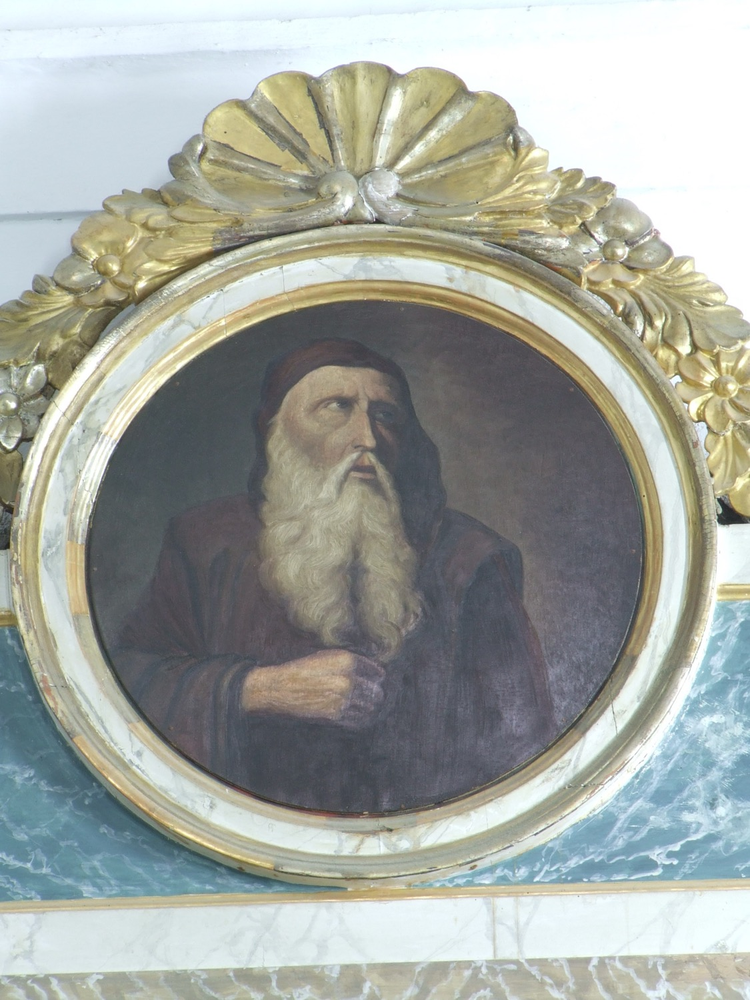

El beato Ramon Llull (1232–1316) fue un escritor, filósofo, místico, teólogo y misionero mallorquín. Autor de una obra extensísima en catalán, latín y árabe, es una de las figuras más importantes del pensamiento medieval europeo y uno de los mallorquines más universales de la historia. Hijo de familia cortesana, fue preceptor del rey Jaime II, pero hacia los treinta años, a raíz de una serie de visiones místicas, abandonó la vida cortesana y dedicó el resto de su vida a convertir a los infieles a la fe cristiana por medio de la razón. Fundó el monasterio de Miramar en Mallorca y predicó por Europa, el Próximo Oriente y el norte de África.
En este medallón aparece vestido con hábito franciscano, como recordatorio de su identificación con los valores franciscanos, que lo llevaron a ser terciario franciscano, es decir, a vivir según la regla franciscana sin ser fraile. De hecho, de acuerdo con una tradición, recibió el hábito franciscano *in articulo mortis*.